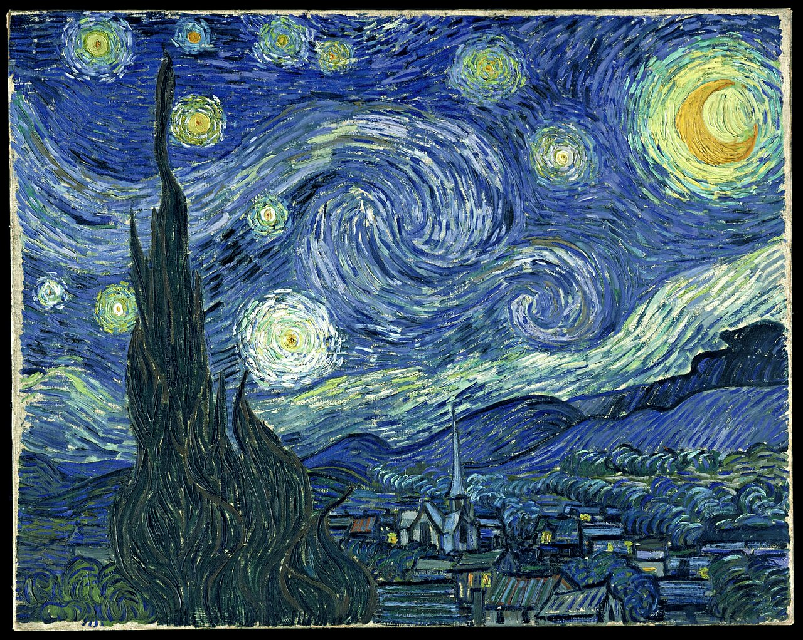
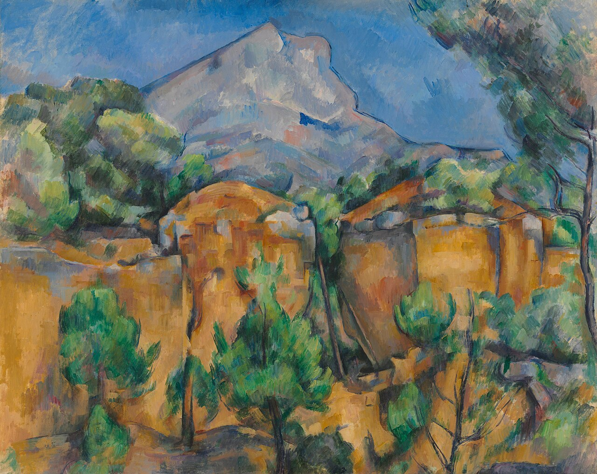
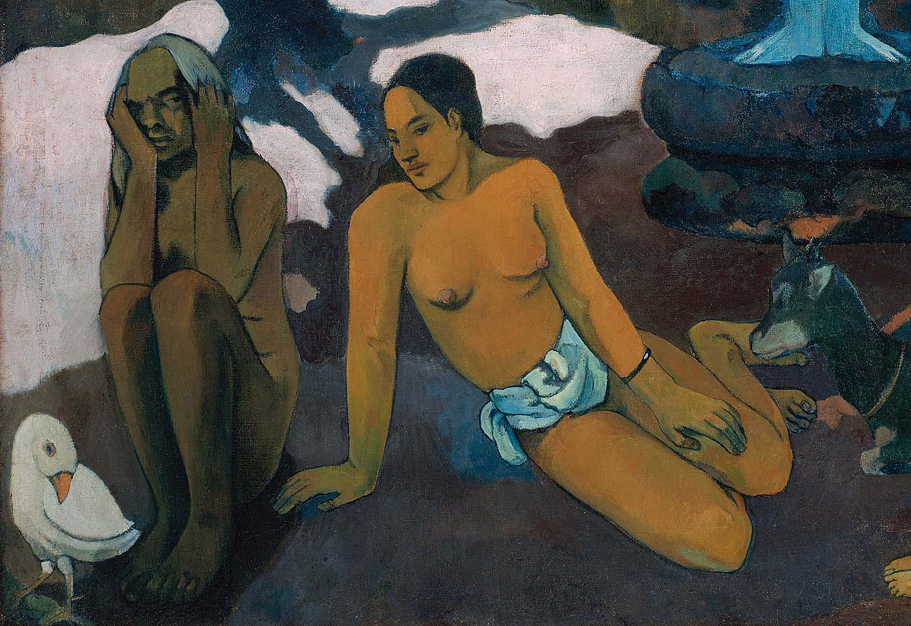
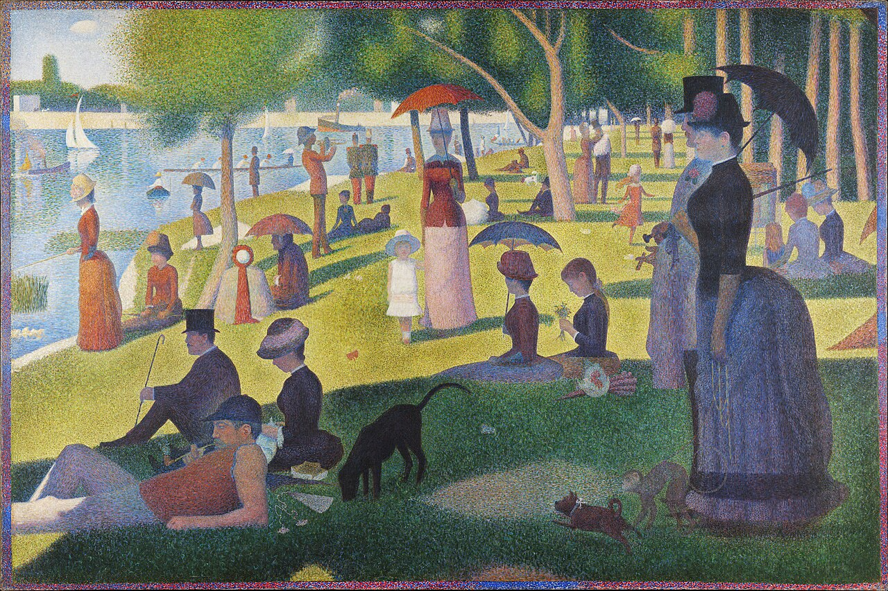
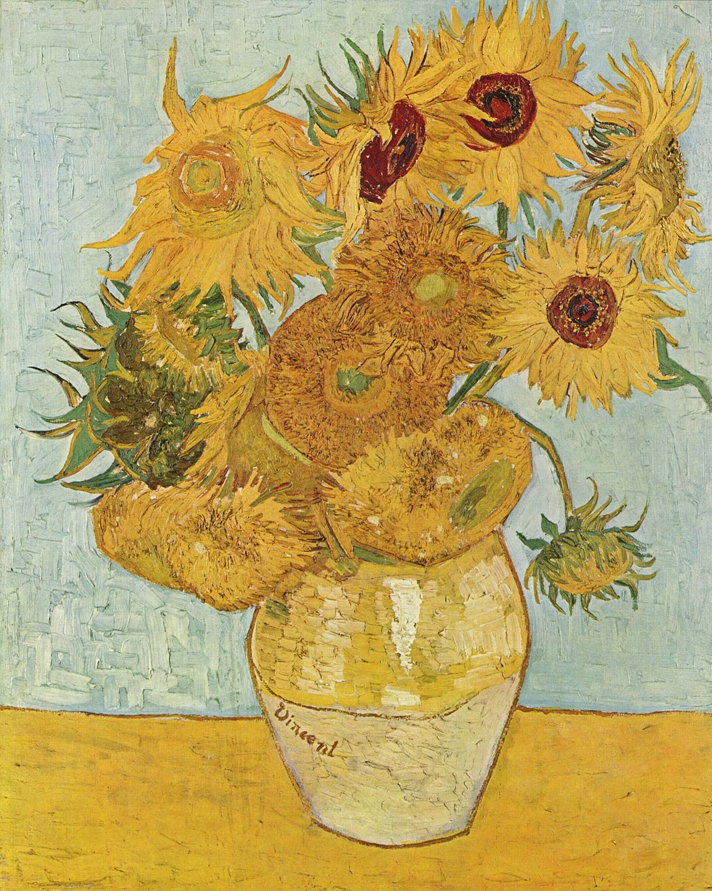
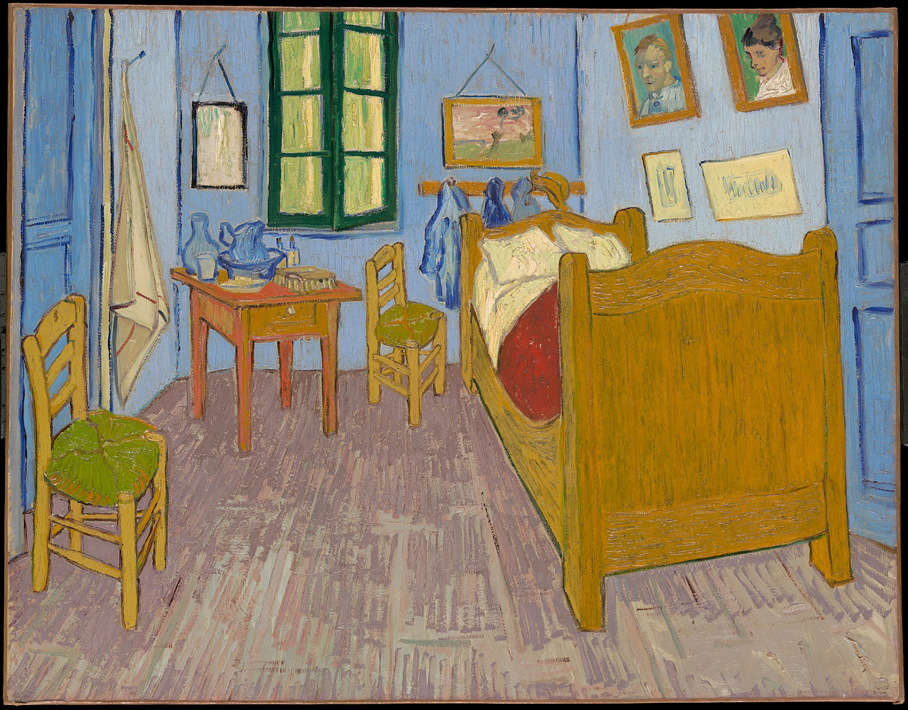
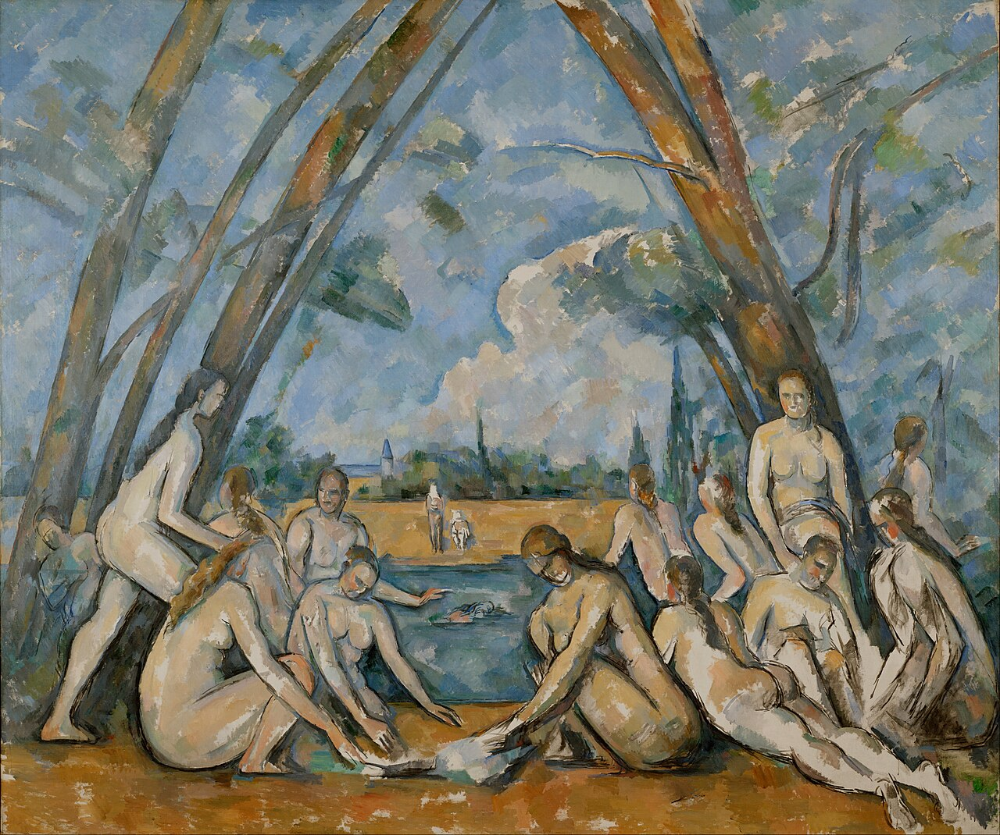
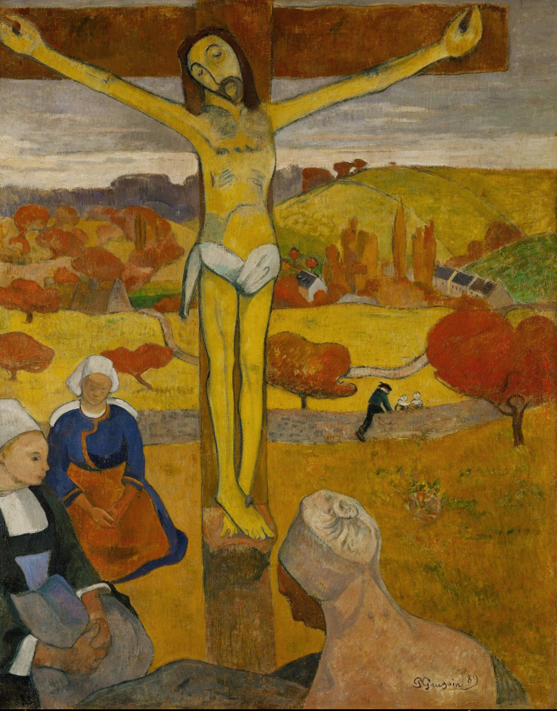
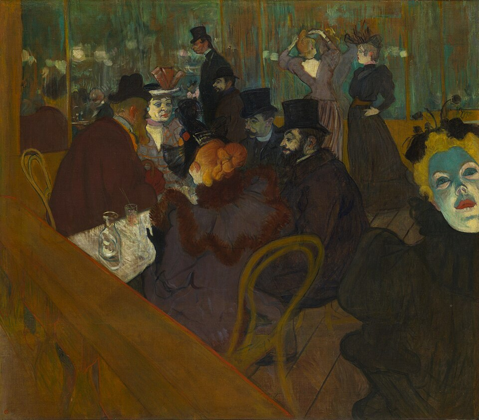

Meesterwerk: De Sterrennacht
Vincent van Gogh, 1889

⚜️ UITGEBREIDE STIJLFIGUREN
🎨 STRUCTUUR BOVEN IMPRESSIE
Van vluchtig naar vast: Waar Impressionisten het moment vingen, zoeken Post-Impressionisten structuur, vorm, orde.
Onderliggende geometrie: Cézanne zag natuur als kegels, bollen, cilinders. De wereld heeft een wiskundige basis.
🌈 SYMBOLISCHE KLEUR
Kleur als emotie: Van Gogh's gele sterren zijn geen natuurlijke kleur maar gevoel. Gauguin's rode grond is innerlijk vuur.
Onnatuurlijk maar waar: De kleur hoeft niet "echt" te zijn, maar moet "waarachtig" zijn.
✍️ EXPRESSIEVE PENSEELSTREKEN
Zichtbaar handwerk: Dikke verf, krachtige streken, impasto. De hand van de kunstenaar is overal zichtbaar.
Ritme en patroon: Van Gogh's golven, Seurat's stipjes. De penseelstreek wordt decoratief.
🧠 INNERLIJK VISIONAIR
Het subjectieve oog: Niet schilderen wat je ziet, maar wat je voelt. De kunstenaar interpreteert de wereld.
Primitivisme: Gauguin naar Tahiti, Van Gogh naar Arles. De kunstenaar zoekt het "authentieke".
📚 TIJDSGEEST CONTEXT (1880-1900)
🌍 POLITIEK PERSPECTIEF - UITGEBREIDE ANALYSE
Het Post-Impressionisme (1880-1910) ontwikkelde zich in een politieke context die werd gekenmerkt door de consolidatie van de Derde Franse Republiek, de opkomst van socialistische en anarchistische bewegingen, en de Europese koloniale expansie. De politieke structuur van Frankrijk, het centrum van het Post-Impressionisme, werd gekenmerkt door een parlementaire democratie die echter fragiel was, met frequente regeringscrises, politieke schandalen zoals de Dreyfus-affaire (1894-1906), en een diepe tweedeling tussen de seculiere republikeinse staat en de katholieke conservatieve oppositie. De Wet van 1905 over de scheiding van kerk en staat institutionaliseerde de laïcité (secularisme) die de Franse politiek tot op de dag van vandaag domineert. De opkomst van socialistische partijen, syndicaten en anarchistische groepen creëerde een klimaat van sociale spanning die direct de kunstenaars beïnvloedde, van wie velen - zoals Paul Signac, Camille Pissarro en Henri Rousseau - socialistische of anarchistische sympathieën hadden.
De sociale dynamiek werd gedomineerd door de ontwikkeling van een kosmopolitische kunstenaarsgemeenschap in Parijs, die kunstenaars uit heel Europa en Amerika aantrok. De wijk Montmartre werd het centrum van een bohémien cultuur, waar kunstenaars, schrijvers, musici en intellectuelen in relatieve armoede maar met grote artistieke vrijheid leefden en werkten. De opkomst van particuliere galerijen, onafhankelijke salons en kunsthandelaars zoals Ambroise Vollard en Durand-Ruel creëerde een alternatief voor het officiële Salonsysteem, waardoor avant-garde kunstenaars toegang kregen tot een markt van particuliere verzamelaars. De groeiende rijkdom van de bourgeoisie, gecombineerd met een cultuur van estheticisme en kunstverzameling, schiep een patroon van kunstenaars die hun werk konden verkopen aan particuliere klanten in plaats van te vertrouwen op overheidsopdrachten of kerkelijke patronage.
Belangrijke politieke gebeurtenissen omvatten de expansie van het Franse koloniale rijk, die kunstenaars als Paul Gauguin inspireerde om te reizen naar exotische locaties zoals Tahiti, op zoek naar een 'authentiekere' cultuur en een ontsnapping aan de als beklemmend ervaren westerse beschaving. De industriële revolutie, die nieuwe technologieën zoals de spoorweg en de fotografie introduceerde, veranderde de perceptie van tijd, ruimte en realiteit. De wetenschappelijke ontwikkelingen, waaronder de theorieën van Chevreul over kleurcontrast en de ontdekkingen van fotografie, beïnvloedden de artistieke praktijk. De Eerste Wereldoorlog (1914-1918) betekende het definitieve einde van het Post-Impressionisme, zowel door de fysieke verwoesting van de oorlog als door de culturele ontwrichting die de Europese samenleving fundamenteel veranderde.
De verbinding tussen politiek en artistieke stijl was direct maar complex. Het Post-Impressionisme ontwikkelde zich als een kritiek op en evolutie van het Impressionisme: terwijl de Impressionisten de voorkeur gaven aan de directe observatie van licht en kleur, zochten de Post-Impressionisten naar structuur, betekenis en emotionele expressie. Paul Cézanne's poging om 'van het Impressionisme iets solide en duurzaams te maken, zoals de kunst van de musea' weerspiegelde een verlangen naar ordening en permanentie in een tijd van politieke en sociale instabiliteit. Georges Seurat's pointillisme, gebaseerd op wetenschappelijke theorieën over kleur, verbeeldde een rationele, systematische benadering van kunst die de positivistische geest van de tijd weerspiegelde. Vincent van Gogh's expressieve kleurgebruik en zichtbare penseelstreken waren een directe expressie van zijn emotionele en mentale toestand, die weerspiegelde deexistentiële crisis van een individu in een moderne, vervreemdende wereld. Paul Gauguin's vlucht naar Tahiti en zijn synthetistische stijl, die vlakke kleurvlakken en symbolische betekenis combineerde, verbeeldde een romantische zoektocht naar een 'authentieke' beschaving buiten de als corrupt ervaren westerse samenleving. Het Post-Impressionisme was daarmee niet slechts een artistieke beweging, maar een intellectuele en emotionele reactie op de moderniteit, wetenschap en politieke onzekerheid van de late 19e eeuw.
Bronnen: Wikipedia - Post-Impressionism, French Third Republic, Dreyfus affair, Anarchism in France, Colonialism, Industrial Revolution, Modernism.
📖 LITERAIR PERSPECTIEF
Het post-impressionisme, een term die pas in 1910 door de criticus Roger Fry werd gemunt, omvatte een diverse groep kunstenaars die het impressionisme wilden overstijgen door meer nadruk te leggen op structuur, vorm en emotionele inhoud. In de literatuur manifesteerde deze zoektocht naar een diepere betekenis zich in verschillende bewegingen en individuele schrijvers die de grenzen van het realisme verlegden. Joris-Karl Huysmans, aanvankelijk een volgeling van Zola's naturalisme, maakte een radicale wending met zijn roman 'À rebours' (1884), die vaak wordt beschouwd als de bijbel van het decadentisme. Het hoofdpersonage, des Esseintes, die zich terugtrekt in een kunstmatig paradijs van esthetische bevrediging, werd een archetype voor de post-impressionistische kunstenaar die de werkelijkheid herschiep volgens persoonlijke subjectiviteit. Huysmans' latere bekering tot het katholicisme weerspiegelde de spirituele zoektocht die ook bij schilders als Gauguin en Van Gogh aanwezig was. De criticus en schrijver Octave Mirbeau, een vroeg pleitbezorger van de impressionisten, steunde ook de post-impressionisten zoals Cézanne en Van Gogh. Zijn roman 'Le Jardin des supplices' (1899) combineerde naturalistische beschrijvingen met symbolistische elementen, wat de literatuur in een soortgelijke richting duwde als de post-impressionistische schilders. Vincent van Gogh's brieven aan zijn broer Theo vormen een uniek literair document dat inzicht geeft in de creatieve geest van een post-impressionistische kunstenaar. Zijn levendige beschrijvingen van kleuren en landschappen tonen hoe zijn visuele waarneming en literaire expressie samenvloeiden. De invloed van Van Gogh's intense emotionele benadering van de natuur vond parallellen in de poëzie van zijn tijdgenoten. Paul Gauguin's zoektocht naar het 'primitieve' en authentieke leidde tot zijn vertrek naar Tahiti en zijn geschriften over zijn ervaringen. 'Noa Noa', zijn autobiografische verslag, hoewel pas postuum volledig gepubliceerd, illustreerde de koloniale romantiek en de westerse nostalgie naar een onbedorven paradijs die ook in de literatuur van de tijd terug te vinden was. Paul Cézanne's obsessie met vorm en structuur, zijn wens om 'van het impressionisme iets solides en duurzaams te maken, zoals de kunst in de musea', vond een literaire echo in het werk van schrijvers die streefden naar een meer rigoureuze compositorische aanpak. De romans van Marcel Proust, hoewel pas in de twintigste eeuw voltooid, vertonen post-impressionistische trekken in hun aandacht voor subjectieve herinnering en de reconstructie van het verleden door zintuiglijke indrukken. De invloed van de post-impressionisten op de literatuur strekte zich uit tot de vroege moderne bewegingen. Schrijvers als André Gide, die de authenticiteit en persoonlijke expressie beklemtoonde, deelden de post-impressionistische afkeer van conventies. De nadruk op individuele visie die de post-impressionisten kenmerkte, droeg bij aan de opkomst van het individualisme in de literatuur, waarin de auteur zich als een uniek scheppend wezen positioneerde, onafhankelijk van heersende normen.
🧠 PSYCHOLOGISCH PERSPECTIEF
Het post-impressionisme bouwt voort op de impressionistische revolutie, maar duikt dieper in de psychologische diepgang van de menselijke ervaring. Waar de impressionisten het vluchtige moment vingen, zochten post-impressionisten naar blijvende structuren, emotionele essenties en persoonlijke waarheden. De post-impressionistische mens is geen passieve waarnemer meer, maar een actieve interpretator, die betekenis projecteert op de wereld.
Psychisch gezien vertonen post-impressionisten een opmerkelijke diversiteit, van Van Goghs manische intensiteit tot Cézannes geduldige obsessie, van Seurats wetenschappelijke analyse tot Gauguins primitivistische escapisme. Wat hen verenigt is een diepe behoefte aan orde in chaos, aan betekenis in een wereld die steeds meer geseculariseerd en gefragmenteerd raakt. Ze zochten niet naar objectieve realiteit, maar naar subjectieve waarheid.
Dominante emoties variëren van Van Goghs extatische vreugde en diepe wanhoop tot Cézannes geduldige vastberadenheid en Gauguins exotisch verlangen. Er is een constante spanning tussen het aardse en het spirituele, tussen individuele expressie en universele geldigheid. Van Goghs zwierende lucht en gele zonnen spreken van een psychedelische waarneming van realiteit. Cézannes gelaagde vlakken tonen een zoektocht naar architecturale zekerheid in een veranderende wereld.
Individueel versus collectief neemt een radicale wending. Post-impressionisten werkten in isolement, elk hun eigen visuele taal ontwikkelend zonder collectief manifest. Van Gogh in Arles, Cézanne in Aix-en-Provence, Gauguin in Tahiti – ze trokken zich terug van de stedelijke massa om hun eigen waarheden te vinden. Dit individualisme weerspiegelt een moderne conditie: de kunstenaar als visionair, als profeet, als eenzaam genius.
De psychische toestand van deze kunstenaars was vaak turbulent. Van Goghs psychische crises, zijn zelfverminking en zelfmoord, zijn legendarisch. Cézanne worstelde met onzekerheid en isolatie, pas laat erkend. Gauguin vluchtte naar Tahiti, op zoek naar een paradijs dat nooit bestond, en stierf eenzaam en ziek. Deze biografische feiten zijn niet los te zien van hun kunst – de kunst werd een middel om innerlijke demons te bevechten, om betekenis te scheppen in een betekenisloos universum.
Het post-impressionisme vertegenwoordigt een psychologische verdieping: kunst niet als afspiegeling van de werkelijkheid, maar als constructie van een innerlijke wereld. Het wijst vooruit naar het expressionisme en het abstract expressionisme, waarin de psyche van de kunstenaar centraal komt te staan. De mens is geen slachtoffer van omstandigheden, maar een schepper van werelden. De psychologische diversiteit van het post-impressionisme weerspiegelde de fragmentatie van de moderne ervaring zelf. Waar de impressionisten nog een zekere visuele eenheid deelden, vertegenwoordigden de post-impressionisten fundamenteel verschillende visies op wat kunst moest zijn en doen: Seurat's wetenschappelijke analytiek, Cézanne's structurele zoektocht naar permanente vorm, Van Gogh's emotionele expressiviteit, Gauguin's primitivistische escapisme. Deze psychologische veelheid voorafschaduwt de modernistische fragmentatie die de twintigste eeuw zou kenmerken - een wereld waarin geen enkele enkele stijl of visie meer als universeel kon gelden.
⚙️ HISTORISCH PERSPECTIEF
- De Tweede Industriële Revolutie: elektriciteit, telefoon, auto, film (1895)
- De Eiffeltoren (1889) symboliseert het moderne
- Psychiatrie ontwikkelt zich (Freud begint te werken)
- Japanisme bereikt hoogtepunt
- Fotografie maakt schilderkunst "vrij"
🎭 FILOSOFISCH PERSPECTIEF
Het Post-Impressionisme (1880-1910) ontwikkelde zich in een filosofische context die werd gekenmerkt door een kritiek op het impressionisme en een hernieuwde nadruk op structuur, betekenis en persoonlijke expressie. Epistemologisch gezien stond het Post-Impressionisme in de traditie van het rationalisme van Paul Cézanne (1839-1906), die de natuur wilde 'behandelen door de cilinder, de bol en de kegel' - een geometrische ordening van de werkelijkheid die de impressionistische vluchtigheid tegenging. Cézanne's 'Mont Sainte-Victoire' series (1885-1906) verbeelden dit programma: het landschap wordt opgebouwd uit kleurvlakken die de diepte, de vorm en de structuur van de berg suggereren, niet de vluchtige indruk van het moment. Deze nadruk op 'constructie', 'structuur' en 'vorm' vertaalde zich naar het kubisme (Pablo Picasso, Georges Braque) en het abstract expressionisme. Metafysisch gezien was het Post-Impressionisme beïnvloed door het existentialisme van Friedrich Nietzsche (1844-1900), die in 'Also sprach Zarathustra' (1883-1885) de 'übermensch' presenteerde die zijn eigen waarden schept. Vincent van Gogh (1853-1890), in zijn brieven aan zijn broer Theo, beschreef zijn kunst als een 'expressie van het gevoel' dat de werkelijkheid overstijgt. Van Gogh's 'De Sterrennacht' (1889) verbeeldt deze expressieve benadering: de lucht is geen realistische weergave, maar een visioen van kosmische energie, verfijnd door de emotionele toestand van de kunstenaar. De 'kleur als expressie' - het gebruik van kleur niet om de werkelijkheid weer te geven, maar om emoties op te roepen - werd een centraal concept van het Post-Impressionisme. Paul Gauguin (1848-1903), in zijn 'Vision na de sermon: Jacob worstelend met de engel' (1888) en zijn Tahiti-schilderijen (zoals 'Waar komen we vandaan? Wat zijn we? Waar gaan we heen?', 1897), verbeeldde een 'primitieve' wereld die de westerse beschaving overstijgt. De 'primitivisme' - de verheerlijking van het 'natuurlijke', het 'oorspronkelijke' en het 'niet-westerse' - fundeerde een kritiek op de moderniteit en een zoektocht naar een verloren paradijs. Ethisch gezien stond het Post-Impressionisme in de context van het individualisme: de kunstenaar als uniek individu dat zijn eigen visie uitdrukt. Georges Seurat (1859-1891), met zijn 'pointillisme' (zoals 'Un dimanche après-midi à l'Île de la Grande Jatte', 1884-1886), verbeelde een wetenschappelijke benadering van de kunst: de kleurentheorie van Chevreul, de optische menging, de geometrische compositie. Henri de Toulouse-Lautrec (1864-1901), met zijn affiches en schilderijen van het Parijse nachtleven (zoals 'Bij de Moulin Rouge', 1892), verbeeldde de moderne stedelijke cultuur: de dans, de prostitutie, de酒精isme, de eenzaamheid in de menigte. Esthetisch gezien ontwikkelde het Post-Impressionisme een 'esthetiek van de persoonlijke expressie': kunst moest niet de werkelijkheid kopiëren, maar de innerlijke wereld van de kunstenaar verbeelden. De 'expressieve' kleur (zoals in Van Gogh's 'Zonnebloemen', 1888), de 'symbolische' vorm (zoals in Gauguin's 'De Gele Christus', 1889) en de 'constructieve' compositie (zoals in Cézanne's 'De Spelers met Kaarten', 1890-1892) verwezen naar een wereld die niet door het oog, maar door de geest wordt geconstrueerd. De 'decoratieve' tendensen van het Post-Impressionisme (zoals in de 'Nabis' groep met Pierre Bonnard en Édouard Vuillard) versterkten deze nadruk op het 'platte' vlak, de 'patroon' en de 'kleur'. Het Post-Impressionisme was daarmee niet slechts een artistieke stijl, maar een filosofische positie die het subject, de constructie en de expressie verhief tot bron van kunst.
Bronnen: Stanford Encyclopedia of Philosophy - 'Nietzsche', 'Schopenhauer', 'Kant', 'Phenomenology'; Wikipedia - 'Post-Impressionism', 'Cézanne', 'Van Gogh', 'Gauguin', 'Seurat', 'Toulouse-Lautrec', 'Pointillism', 'Primitivism', 'Expressionism'.
🎨 MEESTERWERKEN - GEDETAILLEERDE ANALYSE
1. "De Sterrennacht" (1889) — Vincent van Gogh
MoMA, New York · 74 × 92 cm · Olieverf op doek
Achtergrond: Geschilderd vanuit Van Gogh's kamer in het Saint-Paul-de-Mausole asiel in Saint-Rémy-de-Provence. Het uitzicht was overdag, maar hij schilderde het 's nachts uit herinnering. Een van de meest herkenbare schilderijen ter wereld.
🔍 STIJLANALYSE
Beweging: Alles beweegt - de sterren zijn spiralen, de maan is een cirkel, de lucht golft. Van Gogh schildert niet de sterren zoals ze zijn, maar zoals ze voelen: levend, dansend, bijna angstaanjagend.
Kleur: Koningsblauw, kobalt, turquoise. De sterren zijn geel-oranje, de maan is geel. Het dorp is blauw-paars. Geen groen, geen bruin - dit is een nacht die gloeit.
Impasto: Dikke, zware lagen verf. Je zou de schilderij kunnen voelen. De penseelstreken volgen de beweging - horizontaal in het dorp, draaiend in de lucht.
De cipres: De zwarte vlam rechts - een brug tussen aarde en hemel. Van Gogh schilderde cipressen vaak als symbolen van de dood die het leven omarmt.
2. "Mont Sainte-Victoire" (1902-1904) — Paul Cézanne
Philadelphia Museum of Art · 70 × 92 cm · Olieverf op doek

Achtergrond: Cézanne schilderde de Mont Sainte-Victoire meer dan 80 keer. De berg domineert het landschap rond Aix-en-Provence. Dit is laat-Cézanne, geschilderd kort voor zijn dood - de stijl is vrij, bijna abstract.
🔍 STIJLANALYSE
Structuur: Cézanne bouwt de berg op uit kleurvlakken. Geen lijnen, geen contouren - alleen vlakken die samen een vorm suggereren. Het is geometrie in verf.
Kleur: Blauw voor afstand, groen voor midden, warm (oranje, geel) voor voorgrond. Cézanne's wetenschap van de kleurdiepte - warm komt naar voren, koud gaat naar achteren.
Penseelwerk: Kleine, parallelle streken ("constructieve penseelstreken"). Het doek is een mozaïek van kleur. Van dichtbij is het abstract, van veraf is het een berg.
Influencer: Picasso noemde Cézanne "de vader van ons allen". Dit werk toont waarom - het wijst rechtstreeks naar het Kubisme.
3. "Waar komen wij vandaan? Wat zijn wij? Waar gaan wij heen?" (1897-1898) — Paul Gauguin
Museum of Fine Arts, Boston · 139 × 375 cm · Olieverf op doek

Achtergrond: Geschilderd in Tahiti, waar Gauguin zijn "primitieve" paradijs zocht. De titel zijn de drie filosofische vragen. Van rechts naar links: geboorte, leven, dood. Gauguin's testament - hij probeerde zichzelf van de hand te doen na voltooiing.
🔍 STIJLANALYSE
Kleur: Geen natuurlijke kleuren - blauw gras, paarse aarde, rode lucht. Gauguin gebruikt kleur symbolisch, niet descriptief. Het is een droom van Tahiti, niet de werkelijkheid.
Compositie: Een fries - plat, decoratief, als Egyptisch reliëf. Geen perspectief, geen diepte. De figuren zijn opgesteld als in een processie.
Symbolen: Het kind (geboorte), de man die fruit pakt (zonde?), de oude vrouw (dood), het idool (god). De drie vrouwen rechts zijn de drie leeftijden. Het is een universel levensverhaal.
Primitivisme: Gauguin verliet Europa voor het "echte" leven in Tahiti. Maar dit is een gefantaseerd Tahiti - de kunstenaar als exotische vluchteling.
4. "Een Zondagmiddag op het Eiland La Grande Jatte" (1884-1886) — Georges Seurat
Art Institute of Chicago · 208 × 308 cm · Olieverf op doek

Achtergrond: Geschilderd in twee jaar, met duizenden kleine stippen (pointillisme). Een zondagmiddag in een Parijse voorstad. Seurat's meesterwerk en het symbool van het Pointillisme/Neo-Impressionisme.
🔍 STIJLANALYSE
Pointillisme: Kleine, pure kleurpunten die in het oog van de kijker mengen. Wetenschappelijk gebaseerd op kleurtheorie (Chevreul, Rood). Van dichtbij: abstracte stippen. Van veraf: levendige kleuren.
Compositie: Stijf, statisch, bijna geometrisch. De figuren lijken bevroren. Het is geen spontane scène maar een geconstrueerd tableau. Seurat's klassieke opleiding (Ingres) is zichtbaar.
Sociaal: Verschillende klassen in één park: de hoge burgerij (voorgrond), de bohemiens, de dienstmeisjes. Maar iedereen is gelijk in de stippen - de democratie van de verftechniek.
Stijfheid: De figuren hebben geen emotie. Het is bijna surrealistisch - mensen als marionetten. Seurat creëert een wereld van orde en stilte.
5. "Zonnebloemen" (1888) — Vincent van Gogh
National Gallery, Londen · 92 × 73 cm · Olieverf op doek

Achtergrond: Geschilderd in Arles, waar Van Gogh wachtte op Gauguin. De zonnebloemen waren bedoeld om hun gedeelde atelier te versieren. Van Gogh schilderde verschillende versies - dit is de meest bekende.
🔍 STIJLANALYSE
Geel: Verschillende tinten geel - van oker tot cadmium. Het is geen beschrijving maar emotie. Geel als vreugde, als warmte, als vriendschap. Van Gogh noemde geel zijn favoriete kleur.
Impasto: Dikke lagen verf, soms rechtstreeks uit de tube. De bloemen zijn reliëf - je zou ze kunnen voelen. De zaden zijn dikke klodders bruin en zwart.
Compositie: De bloemen vullen het hele doek. Geen achtergrond, geen diepte - alleen bloemen. Het is een portret van bloemen, alsof ze personen zijn.
Vriendschap: Deze schilderijen waren bedoeld als welkom voor Gauguin. Maar de samenwerking zou eindigen in drama (het afsnijden van Van Gogh's oor). De zonnebloemen zijn nu symbolen van een verbroken vriendschap.
6. "Slaapkamer in Arles" (1888) — Vincent van Gogh
Van Gogh Museum, Amsterdam · 72 × 90 cm · Olieverf op doek

Achtergrond: Van Gogh's slaapkamer in het "Gele Huis" in Arles. Hij schilderde het als een rustoord, een plek van vrede. Maar de werkelijkheid was chaotischer - dit is een ideaalbeeld.
🔍 STIJLANALYSE
Kleur: Paars-blauwe muren, gele deken, rode tegels. De kleuren zijn expressief, niet realistisch. Van Gogh schrijft aan zijn broer Theo dat hij de kleuren wilde laten "zingen".
Perspectief: Het perspectief is scheef - de muren staan niet rechtop. Dit is geen fout maar expressie. De kamer is een innerlijke ruimte, geen fysieke.
Eenvoud: Geen luxe, geen opsmuk. Een eenvoudig bed, een stoel, een tafel. Van Gogh's armoede wordt tot deugd - het is de "echte" levensstijl.
Rust: De compositie is symmetrisch, de kleuren zijn harmonieus. Dit is hoe Van Gogh zich wilde voelen - rustig, tevreden, thuis.
7. "De Grote Badenden" (1898-1905) — Paul Cézanne
Philadelphia Museum of Art · 211 × 251 cm · Olieverf op doek

Achtergrond: Cézanne werkte er jaren aan, het grootste schilderij dat hij ooit maakte. Naakte vrouwen in een landschap - een klassiek thema, maar radicaal anders uitgevoerd.
🔍 STIJLANALYSE
Geometrie: De lichamen zijn opgebouwd uit cilinders en bollen. Geen zachte rondingen maar hoekige vlakken. Cézanne reduceert het lichaam tot zijn basisvormen.
Ruimte: De figuren lijken op te drijven, niet stevig in het landschap. Er is geen duidelijk voor- en achtergrond. De ruimte is geflatteerd, bijna tweedimensionaal.
Kleur: Oker, groen, blauw - aardse tonen. Geen roze huid, geen blauwe hemel. De kleur dient de structuur, niet het realisme.
Invloed: Picasso en Matisse bewonderden dit werk. Het toont de weg naar het modernisme - de mens als geometrisch object, niet als individu.
8. "De Gele Christus" (1889) — Paul Gauguin
Musée d'Orsay, Parijs · 92 × 73 cm · Olieverf op doek

Achtergrond: Geschilderd in Pont-Aven, Bretagne. De kruisiging wordt geplaatst in een Bretons landschap, met Bretonse vrouwen die bidden. Christus is fel geel - bijna een abstractie.
🔍 STIJLANALYSE
Kleur: De gele Christus, het rode kruis, het groene landschap. Geen natuurlijke kleuren - dit is symbolisme. Geel als lijden, als heiligheid, als zon.
Synthetisme: Gauguin's stijl - platte vlakken, zwarte omtreklijnen, geen modellering. Het lijkt op een houtsnede of een glas-in-loodraam. Kunst als decoratie.
Cultuurkritiek: De Bretonse vrouwen dragen traditionele kleding. Gauguin ziet hen als "puur" tegenover de corrupte moderne wereld. Het primitivisme is al aanwezig.
Religie: Het is een kruisiging, maar geen traditionele. Christus is een symbool van offer en verlossing, niet een historische figuur. Gauguin creëert zijn eigen iconografie.
9. "In het Moulin Rouge" (1892-1895) — Henri de Toulouse-Lautrec
Art Institute of Chicago · 123 × 141 cm · Olieverf op doek

Achtergrond: Het Moulin Rouge in Montmartre, de beroemde cabaret. Toulouse-Lautrec was een vaste klant en schilderde de artiesten en klanten. Het toont het nachtleven van Parijs.
🔍 STIJLANALYSE
Compositie: De figuur rechtsonder (met de groene hoed) is gesneden - innovatief. De spiegel toont een andere hoek. Het is een snapshot, een moment uit het echte leven.
Kleur: Oker, groen, rood - de kleuren van gaslicht en schaduw. De huid is vaak groenachtig - nachtelijke vermoeidheid. Het is sfeervol, bijna claustrofobisch.
Figuren: La Goulue (de beroemde danseres), Jane Avril, de kunstenaar zelf (links). Toulouse-Lautrec portretteert zijn vrienden en helden zonder verfraaiing.
Invloed: De Japanse prent (ukiyo-e) is zichtbaar in de platheid, de cropping, de onnatuurlijke kleuren. Toulouse-Lautrec was een verzamelaar van Japanse kunst.
10. "Terras van een Café bij Nacht" (1888) — Vincent van Gogh
Kröller-Müller Museum, Otterlo · 81 × 66 cm · Olieverf op doek

Achtergrond: Een café in Arles, bij nacht. Van Gogh schilderde dit zonder zwart - alleen kleur. Een brief aan zijn zus Willemien beschrijft het als "een nacht zonder zwart".
🔍 STIJLANALYSE
Kleur: Geen zwart in de nacht - alleen blauw, violet, groen. De sterren zijn stralen van wit en geel. Het terras gloeit oranje. Het is een nacht die straalt.
Perspectief: De straat loopt naar de achtergrond, naar een verlichte kerk. Het is een uitnodiging om te wandelen. De sterren zijn spiralen - Van Gogh's handelsmerk.
Sfeer: Gezelligheid, warmte, menselijkheid. De lege stoelen nodigen uit. Het is een oase van licht in de donkere nacht. Van Gogh's liefde voor het zuiden straalt eruit.
Techniek: Dunne verflagen, maar expressief. De sterren zijn dikker. Van Gogh experimenteert met verschillende technieken in zijn Arles-periode.
📚 CONCLUSIE: VAN NATUUR NAAR NATUUR
Het Post-Impressionisme leert ons:
- Dat structuur belangrijker is dan impressie: Cézanne's geometrie achter de natuur
- Dat kleur emotie is: Van Gogh's gele sterren zijn gevoel, niet astronomie
- Dat het primitieve authentiek is: Gauguin's vlucht naar Tahiti
- Dat wetenschap kunst kan zijn: Seurat's pointillisme als optische wetenschap
- Dat het subject telt: Niet de wereld zoals ze is, maar zoals wij haar ervaren
Het Post-Impressionisme sluit de deur van de 19e eeuw en opent die van de 20e.